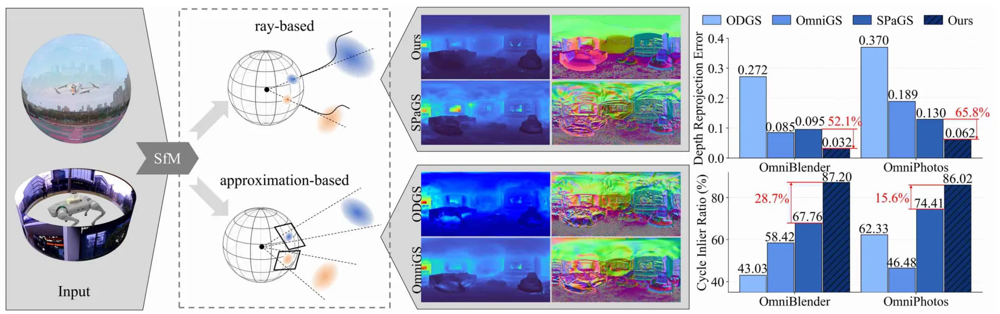
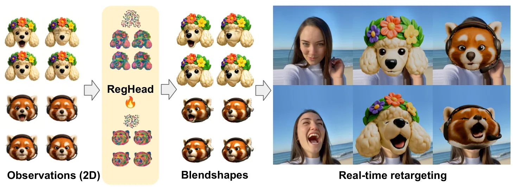
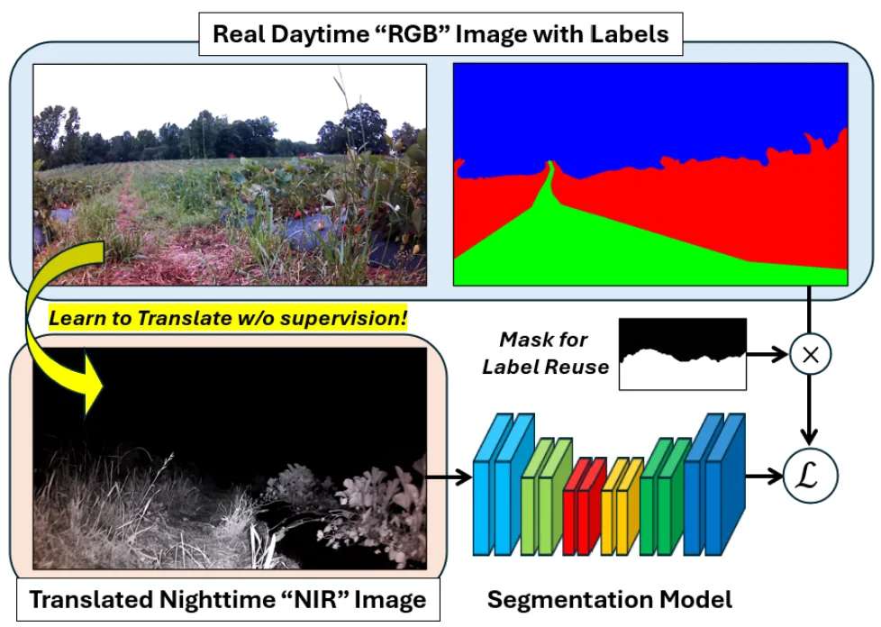
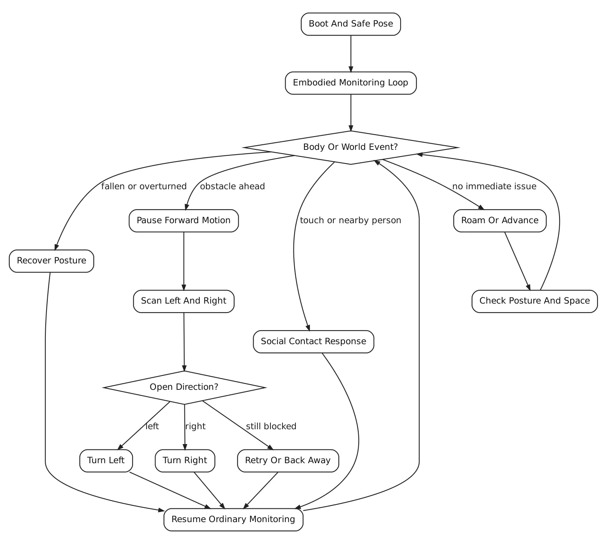
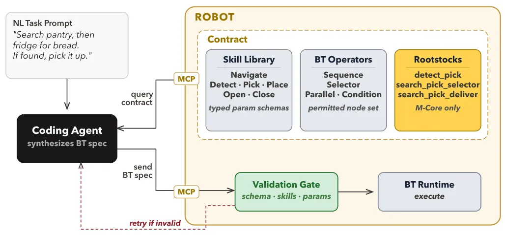
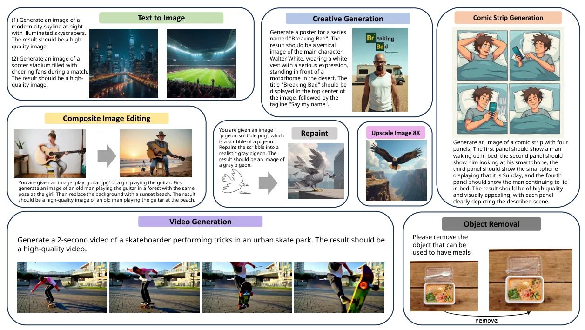
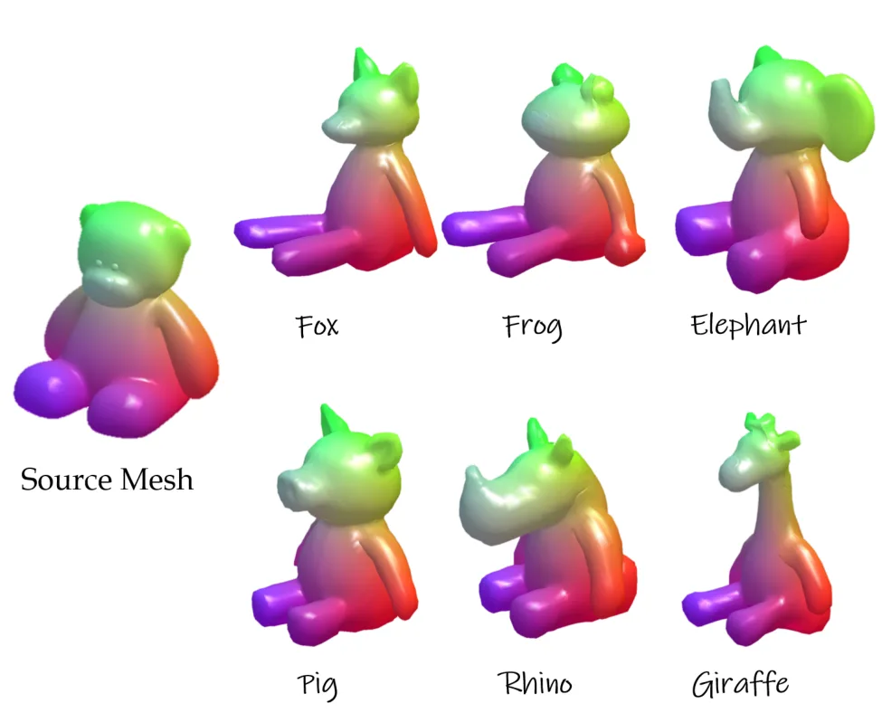

新论文 · 日期 2026-07-15 · score 17 · cs.CV, cs.GR, cs.RO, eess.IV
作者：Zhe Yang, Guoqiang Zhao, Sheng Wu, Kai Luo, Kailun Yang
评分 9.5/10
全景重建3DGSGaussian Opacity Fields几何一致性机器人数据集
一句话工作总结：在球面射线空间直接采样 GOF，以球面包围剔除和畸变自适应滤波提升全景 3DGS 的几何一致性。
Spherical-GOF 将 Gaussian Opacity Fields 扩展到全景相机，不再沿用为透视投影设计的栅格化，而是在单位球面的球面射线空间直接执行 GOF 采样。为提高效率与稳定性，方法推导保守球面包围规则以快速剔除射线—Gaussian 对，并设计随全景像素畸变变化而调整 Gaussian footprint 的球面滤波。OmniBlender 与 OmniPhotos 实验显示其光度质量具有竞…
Omnidirectional images are increasingly used in robotics and vision due to their wide field of view. However, extending 3D Gaussian Splatting (3DGS) to panoramic camera models remains challenging, as existing…

新论文 · 日期 2026-07-15 · score 8 · eess.SP, cs.SY, eess.SY
作者：Wenyu Huang, Nuria Gonz\'alez-Prelcic, Vishnu Ratnam, Murat Bayraktar, Charlie Jianzhong Zhang
评分 8.6/10
5G 定位无源感知多站融合UAV城市杂波
一句话工作总结：先以 LOS 参考消除多 UE 上行 SRS 的同步残差，再在共享三维状态空间融合双基地回波定位 UAV。
本文提出利用多个用户设备的 5G NR 上行 SRS 对低空 UAV 进行无源定位的框架。针对每个 UE 独立振荡器和定时环带来的残余时延、频率与幅度误差，方法复用 timing advance，并通过相邻时机的共轭乘积进行 LOS 参考同步；随后在共享三维状态空间中累积多 UE 证据，以双基地几何归一化对比度完成联合检测。在四个行人 UE、100 MHz FR1 波形和城市杂波场景中，系统实现亚纳秒同步及 4.8…
Low-altitude uncrewed aerial vehicles (UAVs) can pose growing risks to airspace safety, security, and privacy. Cellular infrastructure can passively sense them without dedicated radar hardware by exploiting in…
新论文 · 日期 2026-07-15 · score 7 · cs.RO, cs.AI, cs.CV
作者：Kwan-Yee Lin, Zilin Wang, Janelle J. Liu, Stella X. Yu
评分 6.2/10
人形机器人运动控制强化学习Sim-to-Real连续速度
一句话工作总结：冻结基础行走结构，以多节律调制、动力学步幅塑形和残差适配连续扩展到慢跑与跑步。
GaitSpan 将预训练基础行走策略作为可复用种子技能，通过节律生成、步幅塑形和残差适配扩展到慢跑与跑步。节律模块以多个内部时钟调制冻结的行走策略，并学习命令条件组合；步幅目标受弹簧负载倒立摆动力学启发；残差策略补偿前两者未覆盖的运动细节。作者报告单一命令条件策略可覆盖连续速度区间、跨形态迁移，并在未见过的仿真与真实地形上零样本部署。
A humanoid that can walk should not relearn locomotion from scratch to jog or run. Yet current approaches often obtain gait diversity by prescribing gait schedules, imitating motion clips, training experts to…

新论文 · 日期 2026-07-15 · score 7 · cs.CV, cs.GR
作者：Jiahao Luo, Hao Zhang, Jianqi Chen, Yijie He, Jiaxu Zou, Michael Vasilkovsky, Sergei Korolev, Sergey Tulyakov, Chaoyang Wang, Peter Wonka, James Davis, Jian Wang
评分 6.5/10
网格配准非刚性形变Blendshape前馈模型三维动画
一句话工作总结：以稠密随机锚点表示局部形变，用前馈网络把未配准表情网格快速转换为语义一致的 blendshape basis。
RegHead 面向非人形角色头部，自动把无对应关系的表情网格转换为具有统一语义的 blendshape basis。方法先由少量艺术家绑定资产和微调图像编辑扩展共享表情词汇数据集，再用适合局部面部形变的稠密随机 anchor motion 表示，最后由前馈配准网络从中性形状预测 anchor deformation。实验称其相较优化式基线获得更高保真度并快多个数量级，还支持将人脸跟踪信号实时重定向到非人形角色。
We present RegHead, a framework for constructing semantic blendshape sets for animatable non-humanoid head avatars. With a fixed expression vocabulary, semantic blendshapes provide a low-dimensional and interp…

新论文 · 日期 2026-07-15 · score 6 · cs.RO, cs.AI, cs.CV
作者：Robel Mamo, Rajitha de Silva, Grzegorz Cielniak, Taeyeong Choi
评分 7.6/10
夜间导航近红外跨模态转换农业机器人语义分割
一句话工作总结：用 CLIP 语义约束和 NIR 可见性掩码，把昼间标注迁移到夜间农业机器人视觉导航。
本文提出无需像素级配对监督的昼间 RGB 到夜间近红外图像转换框架，使昼间语义标签可直接用于训练夜间农业导航感知模型。方法借助预训练 CLIP 保持转换前后的语义一致性，并用可见性掩码刻画 NIR 照明的有限有效距离。作者发布 AgriNight 数据集，包含 428 张昼间和 549 张夜间图像及像素级标注；下游语义分割优于图像转换基线，并完成实体机器人夜间实时自主导航实验。
While visual navigation has been extensively studied in agricultural robotics, most existing systems assume daytime conditions. In fact, deploying autonomous robots at night offers significant advantages, incl…

新论文 · 日期 2026-07-15 · score 6 · cs.RO
作者：Christopher A. Tucker
评分 4.8/10
机器人行为状态机AIBO确定性控制软件分析
一句话工作总结：从 AIBO 示例脚本归纳初始化、感知、动作、同步与恢复组成的紧凑状态控制语法。
本文对 Sony ERS-111 AIBO 的 R-CODE 示例脚本生成行为图并开展语料级比较，从跨脚本重复出现的命名状态中归纳初始化、感知、迭代动作、同步和恢复等控制词汇。作者认为这种紧凑的具身状态语法不仅可用于历史软件分析，也可作为受限原生机器人系统构造可封装行为例程的中间表示，以支持确定性控制、直接硬件访问和模块化行为组合。
This paper presents a corpus-level analysis of generated behavior diagrams derived from Sony's R-CODE sample distribution for the ERS-111 AIBO. Rather than reading each script in isolation, the study compares…

新论文 · 日期 2026-07-15 · score 6 · cs.RO
作者：Jonathan Salfity, Robert Blake Anderson, Mitch Pryor
评分 6.7/10
行为树Coding AgentMCPNav2运行时验证
一句话工作总结：先从机器人运行时读取技能与行为树结构契约，再由 coding agent 合成并经验证门检查后执行。
本文提出 contract-grounded 行为树合成架构：coding agent 在生成行为树前，通过机器人侧 MCP server 查询可执行技能库、允许的行为树算子和可选组合模板；生成结果必须经过机器人运行时验证门才能执行。作者在 PyRoboSim 的 110 个模拟任务和 Husarion Panther 实机的 14 个 Nav2 任务上评估 Sonnet 4.6 与 Gemma4:31b，报告显式…
Synthesizing deployable robot behavior trees (BTs) from natural language (NL) requires grounding to ensure every generated BT references only skills a robot can actually execute. Existing LLM-based BT synthesi…

新论文 · 日期 2026-07-15 · score 4 · cs.RO, cs.LG
作者：Yifei Chen, Shihan Lu, Ed Colgate, Kevin Lynch
评分 5.2/10
手内操作强化学习物理先验抓取稳定性Sim-to-Real
一句话工作总结：把全局抓取质量写入强化学习奖励，并以指尖曲率机械先验共同提高无外部感知手内滚动鲁棒性。
本文为无外部感知的多指手内滚动引入两类互补物理先验：由经典抓取分析导出的全局抓取质量先验作为稠密奖励，鼓励接触点分布良好并提高最差情况 wrench resistance；基于指尖曲率的局部接触几何先验则通过机械形态引导任务方向滚动并减少离轴漂移。三种物体、四种手掌方向上的实验显示，两类先验可改善旋转效率、抓取稳定性、抗扰能力及 Sim-to-Real 迁移。
In-hand manipulation without external sensing is challenging due to uncertainties from finger-object contacts and disturbances by gravity. While reinforcement learning has shown promise in learning complex fin…

新论文 · 日期 2026-07-15 · score 4 · cs.CV, cs.LG
作者：Jinxiu Liu, Jianru Li, Tanqing Kuang, Xuanming Liu, Kangfu Mei, Yandong Wen, Weiyang Liu
评分 4.2/10
Agentic AI符号学习持续学习多模态生成工作流记忆
一句话工作总结：把视觉创作经验归纳成可复用符号工作流，再以语言反馈持续更新并组合解决新任务。
SymbOmni 试图解决多模态生成系统无法从经验持续积累可复用知识的 perpetual novice 问题。其 Symbolic Concept Box 将低层操作抽象成可组合的 Symbolic Workflow Instructions，并通过 induction-transduction 循环从经历归纳概念、再组合概念解决新任务。训练采用语言反馈驱动的 verbalized backpropagation…
Visual generation is increasingly ubiquitous in diverse domains, from text-to-image/video synthesis to multimodal interactive creation. Yet prevailing monolithic models remain fundamentally constrained by thei…

新论文 · 日期 2026-07-15 · score 4 · cs.GR, cs.CV
作者：Shijin Wang, Zichong Chen, Yang Zhou, Hui Huang
评分 6/10
网格形变文本引导LaplacianSDS姿态保持
一句话工作总结：以 Laplacian 完成平滑全局形变，再用 attention-sharing 的 pose-aligned SDS 雕刻细节并保持原始姿态。
PoseAlign 将文本引导网格形变拆分为全局姿态缩放和局部细节雕刻两个阶段。第一阶段采用可微 Laplacian 网格表示，以更高效率获得平滑全局形变；第二阶段提出 pose-aligned SDS loss，通过 attention-sharing 调整 score distillation sampling，在增加文本指定细节的同时保持初始网格姿态。实验表明该方法在文本对齐、姿态保持和网格质量之间取得较好平…
Mesh deformation, the process of altering the vertex positions of a 3D mesh while preserving its topological structure, is a cornerstone of computer graphics. Despite the recent emergence of numerous text-guid…